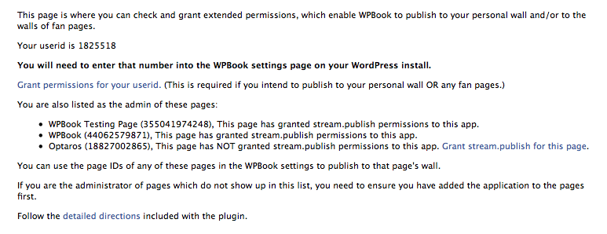
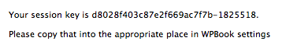
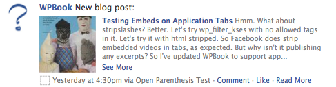

Back to instructions.
Step Three: Publish to Wall(s)
WPBook enables you as the blog author to publish excerpts from blog posts to either your own profile's wall, or the wall of a Facebook page. In either case, you must have first added the application as a user or as a Facebook page (see step 2) before doing these steps.
A. Publish to Individual Wall
In your WPBook settings in WordPress, under the "Stream Publishing Options" you'll need to provide your Facebook Profile ID. The easiest way to get your profile ID is to click on the "Check permissions" link on that settings page:
{kind=link}
When you click on the "Check permissions" link, WPBook tries to load a page in Facebook which both shows your FB profile ID and displays a link which enables you to grant permissions:

When you visit the "Check permissions" link, remember your Facebook Profile ID - you will need to input this in the WPBook settings in a minute. Next, click on the "Grant permissions for your userid" link to give WPBook permission to publish to your wall. You should see your application load, with a message like this one at the top:

Return to WPBook settings page and add your Facebook profile ID and infinite session key into the appropriate spots:
Be sure to check the checkbox next to "Publish new posts to YOUR Facebook Wall" and save your settings.
From now on, whenever you publish a new blog post, an excerpt from that blog post should be automatically posted to your personal Facebook wall.

- This excerpt will be the "Post Excerpt" added to the box labelled "Excerpt" in the new post compose screen (if you've provided one), the part of the post content up to the "more" link if you've used that, or (finally) the first 1000 characters of the post, if you haven't provided a manual excerpt or a teaser.
- If your blog post has any images attached to it - images added using the "Add an image" button on the post compose screen - the first of those images will be added to the Facebook wall post.
- Unfortunately, because Facebook only allows plain text to be used in wall posts, any formatting from the excerpt will be stripped out, including images and links within the text. (All the formatting is preserved in the full post, of course).
- If you've checked the "Use external permalinks on Walls" setting, the link in the wall excerpt will point to the post on your WordPress blog; otherwise, the link will point to the post in your Faceook application view. (The link is both the title of the blog post - "Testing Embeds on Application Tabs" in the example above, and on the "Read More" link in the line at the end, after the wall post date and time, Comment, and Like links. The "See More" link in the example just expands to show the full excerpt).
- The question mark image in the example above would be replaced by your page's profile image, if you have set one. The smaller icon at the bottom of the example, to the left of "Yesterday" would be the icon of your application.
Note: you can customize the Facebook "message" which accompanies the post as well - this is the "New blog post:" section of the example above. The setting is in WPBook in WordPress, and it is labelled "Attribution line"
If posting to Facebook wall is not working, enable the "Show errors posting to Facebook Stream" setting and try again (unpublish and republish a post). Check the support forum for help.
B. Publish to Facebook Page
Publishing to pages is quite similar. Ensure first that you've added the application to your page (see step 2). Once you have, visit the "Check permissions" link from the "Stream Publishing Options" section of WPBook settings page in WordPress:
Click on the "Grant stream.publish for this page" link next to the page you'd like to publish to. If the page you are looking for does not appear, revisit step 2 and add the application tab to the page first, then revisit the "Check permissions" link.
Return to the "Stream Publishing Options" section of WPBook settings page in WordPress, make sure the checkbox next to "Publish new posts to the Wall of Fan Page" is checked, and input your page's page id (which is shown on the "Check permissions" page) is entered correctly, and save settings.
The same caveats about the excerpt listed above for individual pages apply to Fan Page wall posts as well. Note: You must have granted permissions to your userid and input an infinite session key first for publishing to page walls to work as well. (There is no separate infinite session key for pages - the one provided for your userid is used for both.
If posting to Facebook wall is not working, enable the "Show errors posting to Facebook Stream" setting and try again (unpublish and republish a post). Check the support forum for help.
Up to Install Instructions | Back to Step 2: Add to Profile / Tabs | On to Step 4: Import from Walls